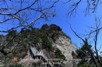

南川区
位于重庆南部，地处渝黔、渝湘经济带交汇
点，属重庆城市发展新区，东南与贵州省道真、正
安、桐梓县接壤，东北与武隆县为邻，北接涪陵区
，西连巴南区、綦江区。
2014年，南川区幅员面积2602平方千米，辖
3个街道、31个乡镇，2014年，户籍人口686585人
(常住人口为55.91万人)。南川是一个历史悠久、
资源富集、交通便捷、生态优越、开明开放的秀
美隽永之城。
境内的金佛山被誉为"南方如初佛地，巴蜀
第一名山"，素有"北有峨眉、南有金佛，东朝普
陀、西拜金佛"之说。先后被评为全国文化先进
区、中国楹联文化之乡、民间歌舞之乡、笙歌
苗舞之乡、板凳龙舞之乡。 |
|  |
金佛山位于重庆南部南川区境内，属大娄山山脉，金佛山又名金山，古称九递山，由金佛、箐坝、柏枝山108峰组成。总面积1300平方公里，风景区规划面积441平方公里，保护区面积522平方公里。主峰风吹岭海拔2251米，是大娄山脉最高峰，金佛山就如高昂的龙头雄踞在这条山系的北端。金佛山素为蜀中四大名山之一而 |
|
黎香湖山清水秀，水质清澈幽静，港湾众多，驳岸线曲折环绕（全长65公里），可供开发的半岛38个，湖心岛1个（木鱼岛），基础设施较好，风景气候宜人，是生态旅游、休闲度假，健体养身的理想之地。黎香湖附近有国家级风景名胜区南川金佛山，武隆仙女山，万盛石林，巴南东温泉，是重庆一小时经济圈内尚未开发的海拔最高、温度最低、植被最好、水质最清、体量最大的高山人工湖泊。黎香湖又名：土溪水库从1958年开始修建 |
|
南川区花山公园位于重庆南川区东环路，总占地面积10.1平方公里，东至三秀坝，西至东环路，南至石雷路林堡社区段，北至凤嘴江新桥段，总投资25亿元。南川区花山公其建设内容包含主题公园、生态恢复示范基地、科普教育基地、红色文化教育基地、革命雕塑园、野生花卉应用基地、佛教文化展示区域、动物科普馆、拓展训练地、大型生态农庄、园林绿化等各种休闲项目及其相关的配套设施。 地理位置：重庆南川区东环路 |
|